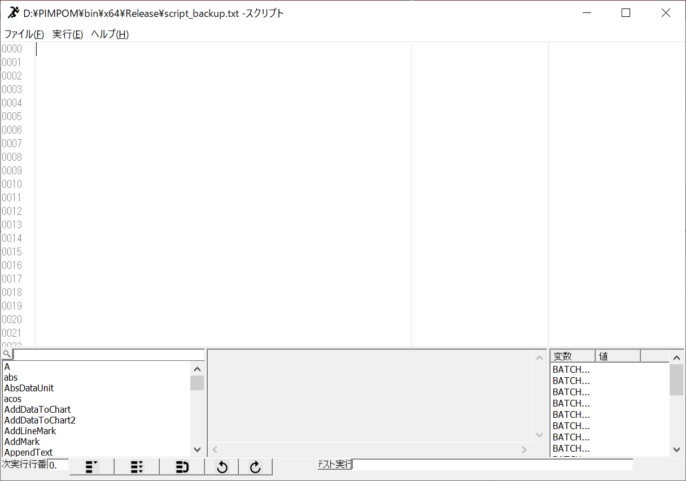

7. スクリプト
PIMPOM は独自の行指向スクリプト言語を持つ。数式ウィンドウ（画素ごとの式）とスクリプトウィンドウ（手続き的な処理）で同じ評価器 CCalculate（DataWrapper/Calculate.cpp、CalculateMacro.cpp）を使う。
概要
| 項目 | 仕様 |
|---|---|
| 実行単位 | 1 行 1 文。各行は 1 つの結果（数値または文字列）を持ち、Res(行番号) で参照できる（行番号は 0 始まり） |
| 型 | 数値（double）と文字列（最大 1023 バイト）の 2 種。動的型付けで、代入で型が決まる |
| 変数 | var a, b, c で宣言。全行で共有するグローバル変数（最大 150 個） |
| 制御構文 | if / elseif / else / endif、while / endwhile、for / endfor、goto(n)、break、clear |
| 関数 | マクロ関数 163 種（オーバーロード込み 186 定義）。名前は大文字小文字を区別する |
| コメント | // から行末まで |
| 実行環境 | 数式ウィンドウ（全画素に式を適用）、スクリプトウィンドウ（1 行ずつ実行）、バッチ実行、外部プログラムの ExecuteCommand、Python（Pimpom.pyd） |
//画像データ0にシェーディング補正フィルタをかける
FilterGaussUnshade(0,1,61,128,1,0,0,1)
//結果を格納するディレクトリを作成する
CreateDirectory( GetSrcFilePath(0) + "unshade" )
//表示画像をディレクトリに格納する
SaveViewAsBitmap(1, GetSrcFilePath(0) + "unshade\" + GetSrcFileName(0))Doc/ScriptSpl「画像フィルタをかけてフォルダ作って保存.TXT」。サンプルは 9 本同梱されている。
字句
各位置で次の順に判定する（command_string_to_command_list）。行の前後には暗黙の括弧が付き、括弧の対応が検査される。
| 順 | 種類 | 規則 |
|---|---|---|
| 1 | 文字列 | "…"。エスケープは無く、"\" は 1 文字の \ |
| 2 | コメント | // 以降を捨てる |
| 3 | 数値 | [0-9]+(\.[0-9]*)?。指数表記・16 進・先頭の . は不可 |
| 4 | 演算子 | 2 文字 == <= >= != && || += -= *= /= を先に、次に 1 文字 + - * / < > = |
| 5 | 括弧 | ( ) |
| 6 | マクロ名 | 登録名と一致し、直後が (。大文字小文字を区別 |
| 7 | 変数 | 宣言済みの名前（最長一致） |
| 8 | 区切り | , と ;（for(a;b;c) の ; もカンマ扱い） |
| 9 | 座標 | i・x は X 座標、j・y は Y 座標（同名の変数があれば変数が優先） |
空白・タブは無視され、それ以外の文字はエラー（Error: line%d has invarid character）。
演算子と優先順位
構文木は作らず、トークンの連結リストを括弧単位で、優先順位の高いものから左結合で畳み込む（calculate_command_list）。
| 順 | 処理 | 備考 |
|---|---|---|
| 1 | マクロ呼び出しと入れ子の ( ) | 再帰で値に置き換える |
| 2 | 変数・座標の値への置換 | 代入演算子の左辺の変数は残す |
| 3 | 単項マイナス | 行頭・( の直後・代入の直後の - のみ（a*-1 は構文エラー） |
| 4 | * / | % 演算子は無い（剰余は mod()） |
| 5 | + - | 文字列同士の + は連結 |
| 6 | == < > <= >= != | 結果は 1/0。文字列は == と != のみ |
| 7 | && || | 同順位で左から評価。非 0 を真とする。短絡評価なし |
| 8 | = += -= *= /= | 文字列は = と += のみ |
!、べき乗演算子、ビット演算、三項演算子は無い。
画素参照
| 式 | 意味 |
|---|---|
I(n) | 画像メモリ n の、現在評価中の画素 (x, y) の値 |
I(n, page) | 同、ページ指定 |
I(n, x, y) / I(n, x, y, page, ch) | 座標を指定して参照。サブピクセル座標は双一次補間、RGB 表示中は輝度 |
A(n, x, y, page, ch) | 座標指定の参照（5 引数のみ） |
M(n) | 現在画素のマスク値 |
x(i), y(j) | 現在画素の座標。スクリプトウィンドウでは x=y=1 に固定 |
RGB 型でカラー表示のときは、チャネルごとに式を 3 回評価する。
制御構文
行の最初の語で判定する（大文字小文字を区別しない）。登録時に set_branch_property がネストを数えて対応行を探し、真偽それぞれの飛び先行番号を前計算する。対応が取れないと invarid IF/ENDIF block などのエラー。
| 構文 | 動作 |
|---|---|
if(条件) … elseif(条件) … else … endif | 真のブロックだけを実行 |
while(条件) … endwhile | 条件が真の間繰り返す |
for(初期化; 条件; 更新) … endfor | 初回は初期化→条件、2 回目以降は更新→条件。条件は数値であること |
goto(n) | 行 n へ飛ぶ（0 ≦ n < 行数） |
break | その行で実行を止める |
clear | 変数と結果をすべて消し、先頭に戻って停止 |
var i, sum
sum = 0
for(i=0; i<10; i+=1)
sum += i
endfor
ShowMessage(1, 1, "sum=" + ToString(sum, 0))if(a>1) b=2 のように制御構文と同じ行に書いた文は、条件に関係なく実行される。ブロックは必ず改行して書く。また var を含む行は宣言行として扱われ、行中の他の記述は無視される。上限値
| 定数 | 値 | 意味 |
|---|---|---|
CALC_COMMAND_LINE_MAX | 5000 | スクリプトの最大行数 |
CALC_STRING_LEN_MAX | 1024 | 1 行・文字列の最大長 |
CALC_COMMAND_LIST_MAX | 150 | 1 行のトークン数 |
CALC_STRING_BUFFER_LEN | 30 | 1 行で扱える文字列値の数（実質 29） |
CALC_VARIABLE_BUFFER_LEN / CALC_VARIABLE_NAME_MAX | 150 / 256 | 変数の数／変数名の長さ |
CALC_MACRO_ARGS_MAX | 15 | マクロ引数（実質 14 個まで） |
CALC_MACRO_OVERLOAD_MAX | 10 | 同名オーバーロード数 |
CALC_FILE_FINDER_MAX | 3 | EnumFiles の同時列挙数 |
評価器の構造
RegisterCommandString(行の配列, 行数)
└ 行ごと（前回と同じ文字列ならキャッシュを再利用）
FindVariableDefinission → FindCtrlCode → トークン化 → COMMAND 連結リスト
└ set_branch_property（制御構文の飛び先を前計算）
Execute(行, x, y, …, apiMode, &次の行, batchIn, batchOut, autoDraw, blockMap)
├ 空行 → 次の行へ
├ clear → ClearAll、次は 0 行目、停止
├ リストを複製（評価でリストが壊れるため）
├ for → calculate_for_command_list ／ その他 → calculate_command_list
│ └ マクロ → 引数を再帰評価 → 引数の数と型が一致する最初のオーバーロード → execute_macro
├ 結果と経過時間を記録
└ 次の行番号を決める（制御構文は blockMap で状態管理）
ExecuteAPI(行, …) = Execute(行, 1, 1, …, apiMode=true)- トークンは
COMMAND構造体（prev/next、種類、数値、演算子、括弧、マクロ ID、文字列 ID、変数 ID）。種類は 0 数値、1 演算子、2 括弧、3 マクロ、4 カンマ、5 X、6 Y、7 文字列、8 制御、9 変数。 - マクロの引数に暗黙の型変換は無く、合致しなければ
Error: invarid argument for …。 - マクロ ID が 100 以上のもの（画像操作などの API マクロ）は
apiMode = trueのときだけ実行される。数式ウィンドウはapiMode = falseのため、そこで API マクロを書いても何もせず 0 を返す。
数式ウィンドウでの使い方
数式ウィンドウ（CCalcDlg）は 1 行の式を処理範囲の全画素について Execute(0, x, y) し、結果を画素値として書く（CPimpomAPI::CalcDataValue）。作業領域外・マスク画素は飛ばす。
| 式 | 結果 |
|---|---|
2*I(0)+100 | 画像 0 を 2 倍して 100 加算 |
(I(0)+I(1))/2 | 画像 0 と 1 の平均 |
x/3 | X 座標の 1/3（グラデーション） |
100*gaus() | 標準偏差 100 のガウスノイズ |
thresh(I(0),128)*255 | 128 を超える画素を 255 にする |
スクリプトウィンドウ

| 機能 | 仕様 |
|---|---|
| 連続実行 | 10 ms タイマーで 1 tick ごとに 1 行ずつ実行。エラー・break・clear・末尾で停止 |
| ステップ実行・ブレークポイント | 行番号欄のクリックでブレークポイントを切り替える。停止後は続きから実行できる |
| テスト実行 | 1 行だけを別の評価器で実行（プログラムカウンタは動かさない） |
| 結果表示 | 各行の Res(n)=値 (経過[ms]) と、エラー欄（成功 "OK"、空行・コメント "---"） |
| 変数ウォッチ | 宣言変数と BATCH_IN[0-4]、BATCH_OUT[0-14] |
| 編集 | Undo 50 段。.txt を開く・保存・ドラッグ＆ドロップ |
| 自動バックアップ | 終了時に script_backup.txt（exe フォルダ）へ保存し、次回起動時に読み込む |
| ヘルプ | サンプル（Doc\ScriptSpl）、スクリプトマニュアル、マクロ説明（Doc\macro_description.txt）を開く |
| バッチ連携 | ウィンドウ表示中は、バッチ実行の各件でスクリプト全体が先頭から同期実行される。GetBatchInput(i)／SetBatchOutput(i, v) でバッチの入出力パラメータを読み書きする |
マクロ関数一覧
出典は CCalculate::define_macros()。引数の N は数値、S は文字列。画像処理系は src/dst に -1 を渡すと選択中の画像、multi は全ページ・チャネルに適用するかを表す。自動再描画が ON なら処理後に DrawImage(dst) される。戻り値の記載が無いものは成功時 0 を返す。
数値計算(画素参照含む)（29件）
| ID | マクロ | 引数（N=数値/S=文字列） | 戻り | 備考 |
|---|---|---|---|---|
| 0 | I | (n:N) / (n:N, page:N) / (n:N, x:N, y:N) / (n:N, x:N, y:N, page:N, ch:N) | 数値 | 4種: I(n)=現在画素, I(n,page), I(n,x,y), I(n,x,y,page,ch)。資料はI(n,x,y)のみ |
| 1 | sin | (x:N) | 数値 | |
| 2 | cos | (x:N) | 数値 | |
| 3 | tan | (x:N) | 数値 | |
| 4 | log | (x:N) | 数値 | |
| 5 | sqrt | (x:N) | 数値 | |
| 6 | exp | (x:N) | 数値 | |
| 7 | abs | (x:N) | 数値 | |
| 8 | random | () | 数値 | rand()/32767.0 |
| 9 | rand | () | 数値 | ANSI rand() |
| 10 | ceil | (x:N) | 数値 | |
| 11 | floor | (x:N) | 数値 | |
| 12 | asin | (x:N) | 数値 | |
| 13 | acos | (x:N) | 数値 | |
| 14 | pow | (x:N, y:N) | 数値 | |
| 15 | mod | (x:N, y:N) | 数値 | |
| 16 | atan2 | (x:N, y:N) | 数値 | |
| 17 | atan | (x:N) | 数値 | |
| 18 | gaus | () | 数値 | |
| 19 | thresh | (x:N, y:N) | 数値 | |
| 20 | delta | (x:N, y:N) | 数値 | |
| 21 | A | (n:N, x:N, y:N, page:N, ch:N) | 数値 | 資料は3引数だが実装は5引数のみ |
| 22 | M | (n:N) | 数値 | マスク値(現在画素)。マクロ詳細資料に未掲載 |
| 23 | min | (x0:N, x1:N [, … x10:N]) | 数値 | 引数2〜11個(オーバーロード10種、資料は2〜10)。内部でfloatに丸め |
| 24 | max | (x0:N, x1:N [, … x10:N]) | 数値 | 同上 |
| 25 | PI | () | 数値 | |
| 26 | dist | (x0:N, y0:N, x1:N, y1:N) | 数値 | |
| 27 | sigmoid | (x:N, k:N) | 数値 | |
| 28 | ReLU | (x:N) | 数値 |
画像データアクセス（19件）
| ID | マクロ | 引数（N=数値/S=文字列） | 戻り | 備考 |
|---|---|---|---|---|
| 100 | GetDataUnitNumber | () | 数値 | |
| 101 | GetCurrentImageNumber | () | 数値 | |
| 102 | SetCurrentImageNumber | (n:N) | 数値 | |
| 103 | GetDataTypeSize | (n:N, t:N) | 数値 | t:0型 1幅 2高さ 3ページ |
| 104 | CopyDataUnit | (src:N, dst:N) | 数値 | |
| 105 | DeleteDataUnit | (n:N) | 数値 | |
| 106 | BackupDataUnit | (n:N) | 数値 | |
| 107 | RecoverDataUnit | (n:N) | 数値 | |
| 108 | ConvertDataUnit | (n:N, type_to:N, rgb_to:N, comp_to:N, satulate:N, byte_from_disp:N, color_gray:N) | 数値 | |
| 109 | ConvertDispToByte | (n:N) | 数値 | |
| 110 | GetSrcFilePathName | (n:N) | 文字列 | |
| 111 | GetSrcFilePath | (n:N) | 文字列 | 末尾\付きのディレクトリ(サンプルの使い方から推測) |
| 112 | GetSrcFileName | (n:N) | 文字列 | |
| 113 | GetSrcFileTitle | (n:N) | 文字列 | |
| 114 | FormatDataUnit | (n:N, type:N, width:N, height:N, page:N) | 数値 | |
| 115 | GetDataMinMax | (n:N, t:N) | 数値 | t:0最小 1最大 |
| 116 | SetDispPage | (n:N, page:N) | 数値 | |
| 117 | SetDispChannel | (n:N, channel:N) | 数値 | |
| 118 | UseWorkArea | (n:N, use:N) | 数値 | スクリプトマニュアル一覧未掲載 |
画像表示・作業領域（8件）
| ID | マクロ | 引数（N=数値/S=文字列） | 戻り | 備考 |
|---|---|---|---|---|
| 120 | DrawImage | (n:N, name:S, adjust:N) / (n:N) | 数値 | 2種 |
| 121 | ScaleImage | (n:N, scale:N) | 数値 | |
| 122 | SetDispRange | (n:N, min:N, max:N) | 数値 | |
| 123 | SetDispRangeAuto | (n:N, type:N) | 数値 | |
| 124 | SetWorkArea | (n:N, fig_n:N, left:N, top:N, right:N, bottom:N, or_not:N) | 数値 | |
| 125 | GetWorkAreaVtx | (n:N, fig_n:N, vtx_id:N) | 数値 | |
| 126 | GetWorkAreaOrnot | (n:N, fig_n:N) | 数値 | 資料表記GetWorkAreaOrNotは誤り(大小文字区別) |
| 127 | ChangePalette | (n:N, palette_id:N) | 数値 |
マーク（6件）
| ID | マクロ | 引数（N=数値/S=文字列） | 戻り | 備考 |
|---|---|---|---|---|
| 130 | AddMark | (n:N, x:N, y:N) | 数値 | |
| 131 | DeleteMark | (n:N, m:N) | 数値 | |
| 132 | GetMarkVal | (n:N, m:N, t:N) | 数値 | |
| 133 | GetMarkNumber | (n:N) | 数値 | |
| 134 | ClearMark | (n:N) | 数値 | マニュアル一覧未掲載 |
| 135 | AddLineMark | (n:N, x0:N, y0:N, x1:N, y1:N) | 数値 | マニュアル一覧未掲載 |
幾何変換・数式画像生成（6件）
| ID | マクロ | 引数（N=数値/S=文字列） | 戻り | 備考 |
|---|---|---|---|---|
| 150 | ResizeDataUnit | (src:N, dst:N, new_w:N, new_h:N, adjust:N, offset_x:N, offset_y:N, reduce_type:N) | 数値 | |
| 151 | ClipDataUnit | (src:N, dst:N, left:N, top:N, right:N, bottom:N) | 数値 | |
| 152 | PerspectiveTransDataUnit | (src:N, dst:N, ti:N, tj:N, tX:N, tY:N, theta:N, phai:N, psi:N, fl_phisical:N, ccd_pix_size:N, out_rgn:N) | 数値 | |
| 153 | IsoTransDataUnit | (src:N, dst:N, tx:N, ty:N, theta:N, magnify:N, out_rgn:N) | 数値 | スクリプトマニュアル表記IsoTarnsDataUnitは誤り |
| 154 | CalcDataValue | (n:N, type:N, width:N, height:N, formula:S, satulate:N) / (n:N, formula:S, satulate:N) | 数値 | 2種: 新規取得/上書き |
| 155 | CalcMaskValue | (n:N, formula:S, mask_max:N, mask_min:N) | 数値 | mask_max/minを(bool)キャストするバグ |
フィルタ・2値化・解析（30件）
| ID | マクロ | 引数（N=数値/S=文字列） | 戻り | 備考 |
|---|---|---|---|---|
| 160 | FilterSmooth | (src:N, dst:N, fw:N, fh:N, cut_min_max:N, multi:N) | 数値 | |
| 161 | FilterGauss | (src:N, dst:N, fs:N, dir:N, pad:N, multi:N) | 数値 | |
| 162 | FilterGaussUnshade | (src:N, dst:N, fs:N, offset:N, contrast:N, dir:N, pad:N, multi:N) | 数値 | |
| 163 | FilterMedian | (src:N, dst:N, fw:N, fh:N, circle_mask:N, multi:N) | 数値 | |
| 164 | FilterErosion | (src:N, dst:N, fw:N, fh:N, circle_mask:N, multi:N) | 数値 | |
| 165 | FilterDilation | (src:N, dst:N, fw:N, fh:N, circle_mask:N, multi:N) | 数値 | |
| 166 | FilterOpening | (src:N, dst:N, fw:N, fh:N, circle_mask:N, multi:N) | 数値 | |
| 167 | FilterClosing | (src:N, dst:N, fw:N, fh:N, circle_mask:N, multi:N) | 数値 | |
| 168 | FilterEdgeSobel | (src:N, dst:N, fs:N, th:N, dir:N, multi:N) | 数値 | |
| 169 | FilterLaplaceGauss | (src:N, dst:N, fs:N, dir:N, offset:N, contrast:N, pad:N, multi:N) | 数値 | |
| 170 | FilterEdgeLog | (src:N, dst:N, fs:N, th:N, dir:N, pad:N, multi:N) | 数値 | |
| 171 | FilterMirror | (src:N, dst:N, dir:N, multi:N) | 数値 | |
| 172 | FilterNega | (src:N, dst:N, multi:N) | 数値 | |
| 173 | FilterEdgeCanny | (src:N, dst:N, fs:N, th:N, th_w:N, multi:N) | 数値 | |
| 174 | FilterBilateral | (src:N, dst:N, fs:N, vsigma:N, dsigma:N, multi:N) | 数値 | |
| 175 | FilterGabor | (src:N, dst:N, fs:N, gamma:N, freq:N, theta:N, psi:N, offset:N, contrast:N, pad:N, multi:N) | 数値 | |
| 176 | FilterEdgeSigmoid | (src:N, dst:N, fs:N, k:N, theta:N, offset:N, contrast:N, pad:N, multi:N) | 数値 | |
| 177 | FilterCLAHE | (src:N, dst:N, clip_limit:N, div_x:N, div_y:N, multi:N) | 数値 | 資料は3引数、実装は6引数 |
| 178 | FilterLocalContrast | (src:N, dst:N, fs:N, cs:N, multi:N) | 数値 | |
| 179 | FilterLocalContrastPatch | (src:N, dst:N, patch_div:N, (未使用):N) | 数値 | multi に params[4] を渡すバグ(常に0)。資料未掲載 |
| 180 | Binalize | (src:N, dst:N, min_th:N, max_th:N, inv:N) | 数値 | |
| 181 | BinalizeThresholdOtsu | (src:N) | 数値 | |
| 182 | BinalizeThresholdPTile | (src:N, percent:N) | 数値 | |
| 183 | BinalizeLocalGauss | (src:N, dst:N, fs:N, offset:N, inv:N, pad:N) | 数値 | |
| 184 | BinalizeLocalLaplaceGauss | (src:N, dst:N, fs:N, offset:N, inv:N, pad:N) | 数値 | |
| 185 | BinalizeNick | (src:N, dst:N, fs:N, k:N, inv:N) | 数値 | |
| 190 | Label | (src:N, dst:N, sort:N, min_area:N) | 数値 | |
| 195 | HoughLines | (n:N, pixSkip:N, dirSkip:N, voteThresh:N, minLineLength:N, maxLineGap:N) | 数値 | |
| 196 | BlendPoisson | (src:N, blend:N, dst:N, ofsx:N, ofsy:N, mode:N) | 数値 | |
| 370 | FilterDFT | (src:N, dst:N, inv:N) | 数値 | Python拡張(pimpom_macro_def.cpp)に未反映 |
画像データ上への描画（12件）
| ID | マクロ | 引数（N=数値/S=文字列） | 戻り | 備考 |
|---|---|---|---|---|
| 200 | PrepeareDrawing | (n:N, src:N) | 数値 | |
| 201 | DrawLineOnImage | (n:N, sx:N, sy:N, ex:N, ey:N, pen_size:N, r:N, g:N, b:N) | 数値 | |
| 202 | DrawCursorOnImage | (n:N, x:N, y:N, pen_size:N, r:N, g:N, b:N) | 数値 | |
| 203 | DrawCircleOnImage | (n:N, x:N, y:N, rad:N, r:N, g:N, b:N, fill:N) | 数値 | |
| 204 | DrawRectOnImage | (n:N, left:N, top:N, right:N, bottom:N, r:N, g:N, b:N, fill:N) | 数値 | |
| 205 | DrawPointOnImage | (n:N, x:N, y:N, size:N, r:N, g:N, b:N) | 数値 | |
| 206 | DrawTextOnImage | (n:N, x:N, y:N, str:S, r:N, g:N, b:N) | 数値 | |
| 207 | FloodFillOnImage | (n:N, x:N, y:N, r:N, g:N, b:N) | 数値 | |
| 208 | FillWorkAreaOnImage | (n:N, r:N, g:N, b:N) | 数値 | |
| 209 | DrawLineOnImageF | (n:N, a:N, b:N, c:N, pen_size:N, r:N, g:N, b:N) | 数値 | |
| 210 | DrawImageOnImage | (n:N, nd:N, offsetx:N, offsety:N, mixtype:N) | 数値 | |
| 211 | FillWorkAreaOnMask | (n:N, v:N) | 数値 | マニュアル一覧のFloodFillOnMaskは存在しない |
メインウィンドウ上へのGDI描画・線分クリップ（8件）
| ID | マクロ | 引数（N=数値/S=文字列） | 戻り | 備考 |
|---|---|---|---|---|
| 220 | DrawLine | (sx:N, sy:N, ex:N, ey:N, pen_size:N, r:N, g:N, b:N) | 数値 | |
| 221 | DrawCursor | (x:N, y:N, pen_size:N, r:N, g:N, b:N) | 数値 | |
| 222 | DrawRect | (left:N, top:N, right:N, bottom:N, pen_size:N, r:N, g:N, b:N) | 数値 | |
| 223 | DrawCircle | (x:N, y:N, rad:N, pen_size:N, r:N, g:N, b:N) | 数値 | |
| 224 | DrawEllipse | (x:N, y:N, rx:N, ry:N, pen_size:N, r:N, g:N, b:N) | 数値 | |
| 225 | DrawText | (x:N, y:N, str:S, r:N, g:N, b:N, font_size:N) | 数値 | |
| 226 | ClipSegment | (x0:N, y0:N, x1:N, y1:N, left:N, top:N, right:N, bottom:N, vtx_id:N) | 数値 | マニュアル一覧未掲載 |
| 227 | ClipSegmentF | (a:N, b:N, c:N, left:N, top:N, right:N, bottom:N, vtx_id:N) | 数値 | マニュアル一覧未掲載 |
ウィンドウ機能・バッチ・通信・ダイアログ（15件）
| ID | マクロ | 引数（N=数値/S=文字列） | 戻り | 備考 |
|---|---|---|---|---|
| 230 | ShowMessage | (clr:N, id:N, str:S) | 数値 | |
| 231 | MessageBox | (str:S) | 数値 | |
| 232 | CopyToClipbord | (n:N) | 数値 | |
| 233 | PasteFromClipbord | (n:N) | 数値 | |
| 234 | ToString | (x:N, order:N) | 文字列 | floatにキャストしてから変換 |
| 235 | ToNumber | (str:S) | 数値 | |
| 236 | GetBatchInput | (pid:N) | 数値 | バッチ外(pbatchIn=NULL)では0 |
| 237 | SetBatchOutput | (pid:N, val:N) | 数値 | 値はToStringで文字列化して格納 |
| 238 | SetBatchInput | (pid:N, val:N) | 数値 | 資料は1引数表記 |
| 239 | GetBatchOutput | (pid:N) | 数値 | 資料は2引数表記 |
| 240 | UserDlgBatchExecute | (pid:N) | 数値 | |
| 241 | CaptureOne | () | 数値 | スクリプトマニュアル未掲載 |
| 242 | SendString | (str:S) | 数値 | TCP送信。ソケット未オープン時-1を返し成功扱い。資料未掲載 |
| 243 | OpenFileDialog | (file_path:S) | 文字列 | 引数はフィルタ文字列 |
| 244 | FolderDialog | () | 文字列 |
ファイル入出力（9件）
| ID | マクロ | 引数（N=数値/S=文字列） | 戻り | 備考 |
|---|---|---|---|---|
| 250 | SelectAndLoadImageFile | (n:N, file_path:S) | 数値 | 拡張子で形式判定 |
| 251 | SaveViewAsBitmap | (n:N, file_path:S) | 数値 | |
| 252 | SaveArchivedImage | (n:N, file_path:S) | 数値 | |
| 253 | GetDefaultPath | () | 文字列 | |
| 254 | CheckFileExist | (file_path:S) | 数値 | 1/0。マニュアル一覧未掲載 |
| 255 | EnumFiles | (enum_id:N, dir_path:S, file_ext:S) | 数値 | enum_id 0〜2、dir+"\*."+ext をCFileFindで列挙 |
| 256 | GetNextFilePath | (enum_id:N) | 文字列 | 終端で空文字 |
| 257 | SelectAndSaveImageFile | (n:N, file_path:S) | 数値 | |
| 258 | LoadBitmap | (n:N, file_path:S, x:N, y:N, w:N, h:N) | 数値 |
グラフ（3件）
| ID | マクロ | 引数（N=数値/S=文字列） | 戻り | 備考 |
|---|---|---|---|---|
| 260 | AddDataToChart | (n:N, val:N) | 数値 | |
| 261 | AddDataToChart2 | (n:N, valx:N, valy:N) | 数値 | |
| 262 | ClearChart | (n:N) | 数値 |
マクロ特有(行結果・ファイル・待機)（6件）
| ID | マクロ | 引数（N=数値/S=文字列） | 戻り | 備考 |
|---|---|---|---|---|
| 280 | Res | (n:N) | 数値 | 行番号nの結果 |
| 281 | ChangeRes | (n:N, val:N) | 数値 | 行nの結果を数値で上書き |
| 284 | CreateDirectory | (path:S) | 文字列 | 既存なら何もしない。戻り値は引数文字列 |
| 290 | WriteText | (path:S, message:S) | 文字列 | "wt"で上書き+改行 |
| 291 | AppendText | (path:S, message:S) | 文字列 | "at"で追記+改行 |
| 292 | Wait | (ms:N) | 数値 | Sleep(ms) |
文字列操作（4件）
| ID | マクロ | 引数（N=数値/S=文字列） | 戻り | 備考 |
|---|---|---|---|---|
| 300 | StrLen | (str:S) | 数値 | |
| 301 | Substr | (str:S, start:N, len:N) | 文字列 | 範囲外はエラー(メッセージ無し) |
| 302 | FindStr | (str:S, findstr:S) | 数値 | |
| 303 | ReplaceStr | (str:S, oldstr:S, newstr:S) | 文字列 |
画像間演算（8件）
| ID | マクロ | 引数（N=数値/S=文字列） | 戻り | 備考 |
|---|---|---|---|---|
| 350 | Linear2DataUnit | (nA:N, nB:N, nDst:N, type:N, wA:N, wB:N, bias:N, satulate:N) | 数値 | |
| 351 | SumDataUnit | (nA:N, nB:N, nDst:N, type:N, satulate:N) | 数値 | |
| 352 | SubtractDataUnit | (nA:N, nB:N, nDst:N, type:N, satulate:N) | 数値 | |
| 353 | SubAbsDataUnit | (nA:N, nB:N, nDst:N, type:N, satulate:N) | 数値 | |
| 354 | MultiplyDataUnit | (nA:N, nB:N, nDst:N, type:N, satulate:N) | 数値 | |
| 355 | DivideDataUnit | (nA:N, nB:N, nDst:N, type:N, satulate:N) | 数値 | |
| 356 | LinearDataUnit | (n:N, nDst:N, type:N, w:N, bias:N, satulate:N) | 数値 | |
| 357 | AbsDataUnit | (n:N, nDst:N) | 数値 | 【未実装】定義のみでcase無し→実行時常に失敗(エラー文なし) |
AbsDataUnit は定義だけで処理が無く、常に失敗する。FilterLocalContrastPatch は 4 番目の引数を使わず multi が常に偽になる。CalcMaskValue は上下限値を bool に変換してしまう。